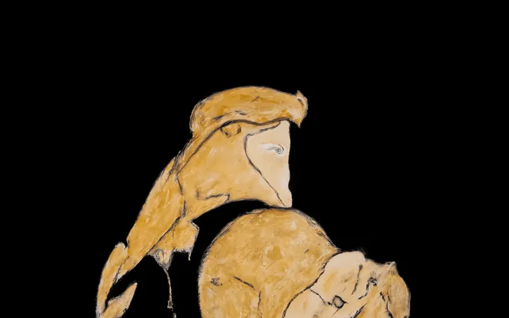

da ven 27 feb a dom 22 nov
BIZHAN BASSIRI. Principe. Il Nottambulo del Pensiero Magmatico.
In ogni progetto espositivo Bizhan Bassiri ha cura di mostrare sia l’esito della creazione più recente, sia taluni lavori emblematici, capaci di enunciare principi, regole e costanti che richiamano le basi poetiche della sua tensione estetica.
 Indicazioni
Indicazioni
- Costi e prenotazioni
- Costo non indicato · Prenotazione non indicata
- Programma
- Programma da verificare. Apri la fonte ufficiale per orari e possibili aggiornamenti.
- In caso di maltempo
- Nessuna indicazione specifica pubblicata.
- Note
- Acquisito automaticamente dalla fonte.
L’EVENTO
Descrizione completa
In ogni progetto espositivo Bizhan Bassiri ha cura di mostrare sia l’esito della creazione più recente, sia taluni lavori emblematici, capaci di enunciare principi, regole e costanti che richiamano le basi poetiche della sua tensione estetica.
Anche per la mostra al Museo Correr, il repertorio di opere di Bassiri individuato non rinuncia, come in altre significative circostanze, al dialogo con lo spazio ospitante , tenendo conto degli aspetti ambientali, soprattutto quando essi possiedono una loro particolare qualità estetica o storica.
In tale ottica si inserisce l’allestimento della mostra Principe. Il nottambulo del Pensiero Magmatico .
Se la figura del Principe , fantasmatica iconografia testimone e alter ego dell’artista, accoglie il visitatore in due delle quattro soglie di accesso allo spazio espositivo, con le novanta immagini che ritraggono artisti scelti da Bassiri, dai Maestri del Quattrocento fino al Duemila, egli configura una ideale sorta di albero genealogico, a cui sente di poter aderire e appartenere per diverse, molteplici ragioni.
Con l’intenzione di voler configurare una “quadreria” che circonda il visitatore e viene incontro ai suoi sguardi, Bassiri ha ideato una collocazione sospesa e scalare delle opere, che si sviluppa dalle parti più basse delle pareti fino all’altezza massima di esse. Se, inoltre, al Meteorite in bronzo è affidato il richiamo alla “verticalità” emblematica dell’arte, a partire dal pavimento sino al suo apice (cm 270), al Fratino e le Serpi che vi giacciono sopra viene assegnata invece la funzione di rendere percepibile l’”orizzontalità” dell’incontro con la realtà delle cose e la sosta contemplativa.
L’impianto espositivo, pur nella sua solennità strutturale dell’insieme, offre una possibilità di fruizione non rigida, anzi concepita nella sensazione di vibrazione fluida che avvolge Venezia e disposta all’incontro col visitatore, nel pieno rispetto della tutela e della conservazione delle opere.
IL PROGRAMMA
Programma e orari
Appuntamenti raccolti dalle fonti elencate. Dove manca un orario, non è ancora disponibile in questa scheda.
Programma pubblicato
- 2026-02-27 — 2026-11-22 ·
INFORMAZIONI UTILI
Prima di partire
- Controllare la fonte prima di partire.
ORGANIZZAZIONE